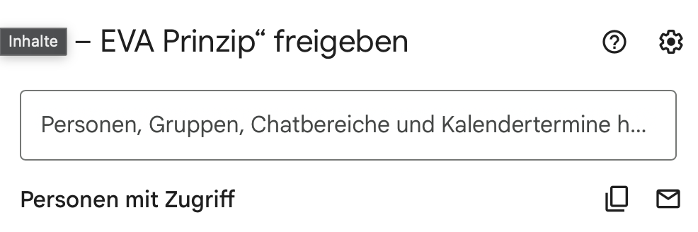

Google Drive
Eine Datei teilen
Bestimme, wer deine Datei sehen oder bearbeiten darf.
Wenn du eine Datei teilst, kann eine andere Person darauf zugreifen. Überlege vorher: Soll sie die Datei nur lesen oder mit dir daran arbeiten?
So teilst du mit einer Person
Datei finden
Öffne Google Drive und suche deine Datei. Klicke sie mit der rechten Maustaste an.
„Freigeben“ öffnen
Wähle Freigeben und im Untermenü noch einmal Freigeben.

Das Teilen findest du im Menü „Freigeben“. Person eintragen
Tippe die E-Mail-Adresse der Person in das Feld oben ein und wähle den passenden Treffer aus.

Prüfe die E-Mail-Adresse sorgfältig. Recht wählen und senden
Wähle Betrachter zum Lesen oder Bearbeiter zum gemeinsamen Bearbeiten. Bestätige mit Senden oder Freigeben. Die genaue Schaltfläche kann je nach Ansicht anders heißen. Wenn das Freigabefenster danach noch offen ist, schließe es mit Fertig.
Mit „Fertig“ schließt du das Fenster. „Link kopieren“ kopiert nur die Adresse. Freigabe prüfen
Öffne das Freigabefenster erneut. Unter „Personen mit Zugriff“ sollte die richtige Person mit der richtigen Rolle stehen. Danach kannst du es mit Fertig wieder schließen.
Mehr zur Freigabe in der Google-Drive-Hilfe.